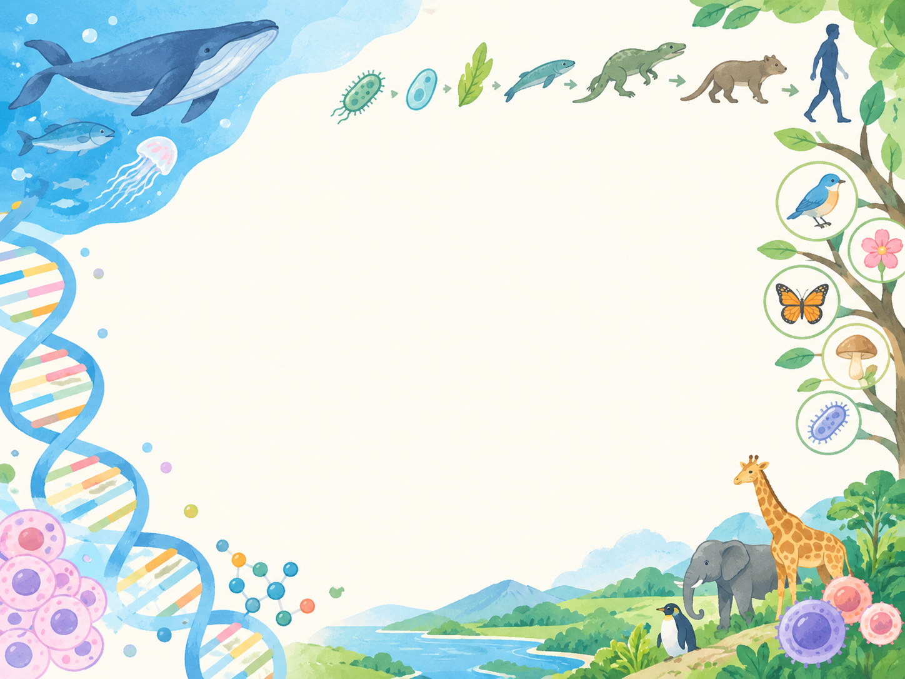
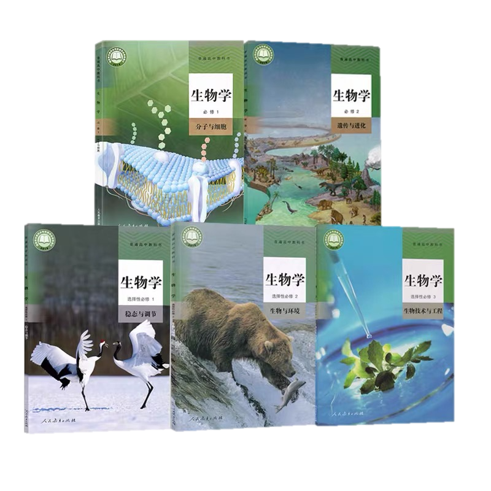
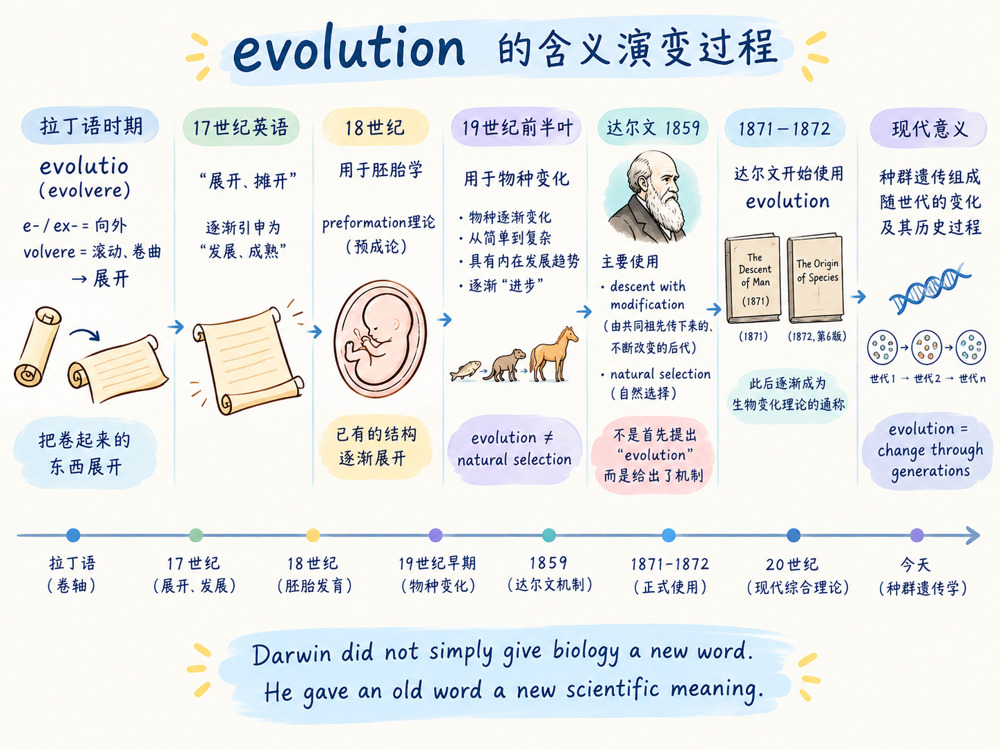
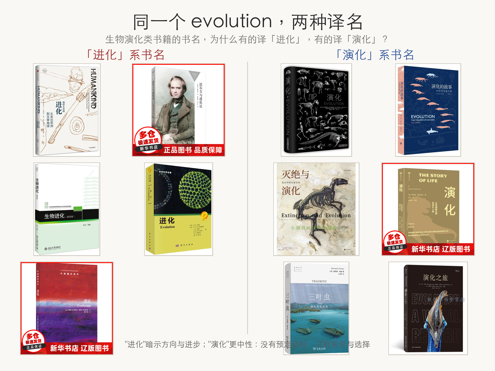

葛瑛 副教授
geying@dmu.edu.cn
肿瘤干细胞研究院 · 基因组中心
2026-11-17 · 20261117普通生物学-生物演化1


高中讲的是「结论」；这个月我们一起重走一遍得出结论的「推理之路」。

概念 · 原理 —— 自主 · 探究：同一个词，意义的转移本身就是一次科学观的革命。

https://en.wikipedia.org/wiki/Bloom%27s_taxonomy —— 我们的目标在上三层
| 选题 | 任选一个你感兴趣、想真正弄明白的生物学知识点 |
| 内容 | 用自己的方式解释它：示意图、实例、证据、逻辑链条，也可以画出你的疑问 |
| 形式 | 手绘于一张 A4 纸；选做：≤3 分钟讲解视频（加分） |
| 提交 | 本周五 21:59 前，雨课堂「试卷」上传照片（视频链接） |
| 评价 | 科学准确 · 真正理解 · 探究反思 · 表达创意 |
请在作品中体现：① 我为什么对它感兴趣？② 我想探究什么、实际做了什么？③ 我发现了什么、还剩什么没弄懂？
达尔文的生物演化理论是生命科学基础的基础。有了这个理论，我们才能——
① 对生物的多样性、适应性和统一性做出完整的合乎逻辑的解释；
② 把纷繁的生物贯穿起来，形成系统；
③ 把生物学各分支学科融汇成一个整体，成为统一的生命科学。
经过一个月的学习，请你用自己的语言重新论述这句话。—— 这就是这一个月的作业。
——陈阅增《普通生物学》第 5 版，P192
接下来：穿越到达尔文时代，亲身体验演化理论的推理过程。